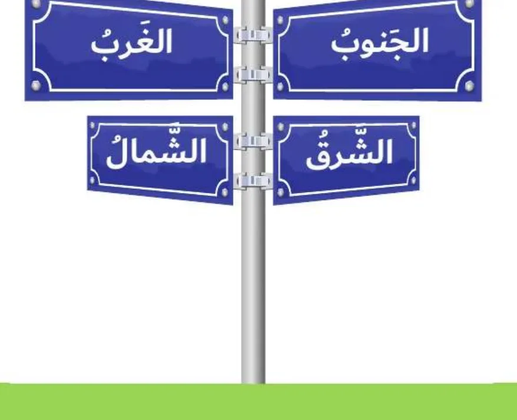

بِطاقَةُ الْمَصادِرِ وَالْمَفاهيمِ: الْجِهاتُ الْأَصْلِيَّةُ وَطَرائِقُ تَحْديدِها
الدِّراساتُ الِاجْتِماعِيَّةُ · الصَّفُّ الثّالِثُ · ص 12–17
لِلْجَميعِ

الْجِهاتُ الْأَصْلِيَّةُ أَرْبَعٌ: الشَّمالُ وَالْجَنوبُ وَالشَّرْقُ وَالْغَرْبُ، تُشْرِقُ الشَّمْسُ مِنَ الشَّرْقِ وَتَغيبُ في الْغَرْبِ، فَإِذا مَدَدْتُ يَدِيَ الْيُمْنى نَحْوَ الشَّرْقِ كانَتْ يَدِيَ الْيُسْرى نَحْوَ الْغَرْبِ، وَأَمامي الشَّمالُ وَخَلْفي الْجَنوبُ، وَبِها أَصِفُ مَواقِعَ الْأَماكِنِ.📖 أَقْرَأُ النَّصَّ
مَعَ بِدايَةِ يَوْمٍ جَديدٍ اسْتَيْقَظَتْ ميثاءُ مِنْ فِراشِها بِنَشاطٍ وَسَعادَةٍ، تَوَضَّأَتْ وَصَلَّتْ وَرَتَّبَتْ سَريرَها، ثُمَّ أَشْرَقَتِ الشَّمْسُ بِتَباشيرِها مِنْ جِهَةِ الشَّرْقِ قادِمَةً بِنورِها، لِيَعُمَّ أَرْجاءَ الْبِلادِ. ارْتَدَتْ ميثاءُ مَلابِسَها مُسْرِعَةً كَيْ لا تَتَأَخَّرَ عَنْ مَدْرَسَتِها. تَناوَلَتْ فُطورَها وَحَمَلَتْ حَقيبَتَها، وَخَرَجَتْ مِنْ مَنْزِلِها سَيْرًا عَلى الْأَقْدامِ لِقُرْبِ مَدْرَسَتِها مِنْ مَنْزِلِها، فَهِيَ تَقَعُ جِهَةَ الشَّمالِ. تَعَلَّمَتْ ميثاءُ الْيَوْمَ دَرْسَ الْجِهاتِ الْأَصْلِيَّةِ، وَأَخْبَرَتْ مُعَلِّمَتَها أَنَّها حينَ تَعودُ إِلى مَنْزِلِها بِالِاتِّجاهِ الثّاني يَكونُ مَوْقِعُ مَنْزِلِها في جِهَةِ الْجَنوبِ. عادَتْ ميثاءُ إِلى مَنْزِلِها سَعيدَةً، أَخَذَتْ قِسْطًا مِنَ الرّاحَةِ، وَمِنْ ثَمَّ الْتَقَتْ صَديقَتَها حَمْدَةَ، وَأَخَذَتا في تَجاذُبِ أَطْرافِ الْحَديثِ وَاللَّهْوِ، وَفَجْأَةً نَظَرَتْ ميثاءُ إِلى جِهَةِ الْغَرْبِ لِتَرى الشَّمْسَ تَغيبُ مُشَكِّلَةً في ذٰلِكَ لَوْحَةً جَميلَةً مُتَناسِقَةَ الْأَلْوانِ، حينَها تَبادَلَتْ ميثاءُ وَحَمْدَةُ الْحَديثَ، وَتَذَكَّرَتا دَرْسَ الْيَوْمِ عَنِ الْجِهاتِ الْأَصْلِيَّةِ، وَهِيَ: الشَّمالُ وَالْجَنوبُ وَالشَّرْقُ وَالْغَرْبُ، وَابْتَسَمَتا، وَذَهَبَتْ كُلٌّ مِنْهُما إِلى مَنْزِلِها فَرِحَةً مَسْرورَةً.
كِتابي ص 12–17
📘 كَلِماتي
الشَّمالُ
أَمامي ⬆️
الْجَنوبُ
خَلْفي ⬇️
الشَّرْقُ
شُروقُ الشَّمْسِ 🌅
الْغَرْبُ
غُروبُ الشَّمْسِ 🌇
💡 تَعَلَّمْتُ
🧭الْجِهاتُ الْأَصْلِيَّةُ أَرْبَعٌ.
🌅الشَّمْسُ تُشْرِقُ مِنَ الشَّرْقِ.
🌇الشَّمْسُ تَغيبُ في الْغَرْبِ.
⬆️الشَّمالُ يُقابِلُهُ الْجَنوبُ.
✅ أُطَبِّقُ
☐أَرْسُمُ خَريطَةَ غُرْفَتي بِالْجِهاتِ.
☐أُكْمِلُ كِتابي ص 15–17.
🏅 ⭐ أَحْسَنْتَ